1. 미군의 케슘섬 공습
(한국시간 기준 : 11/17 22시경)
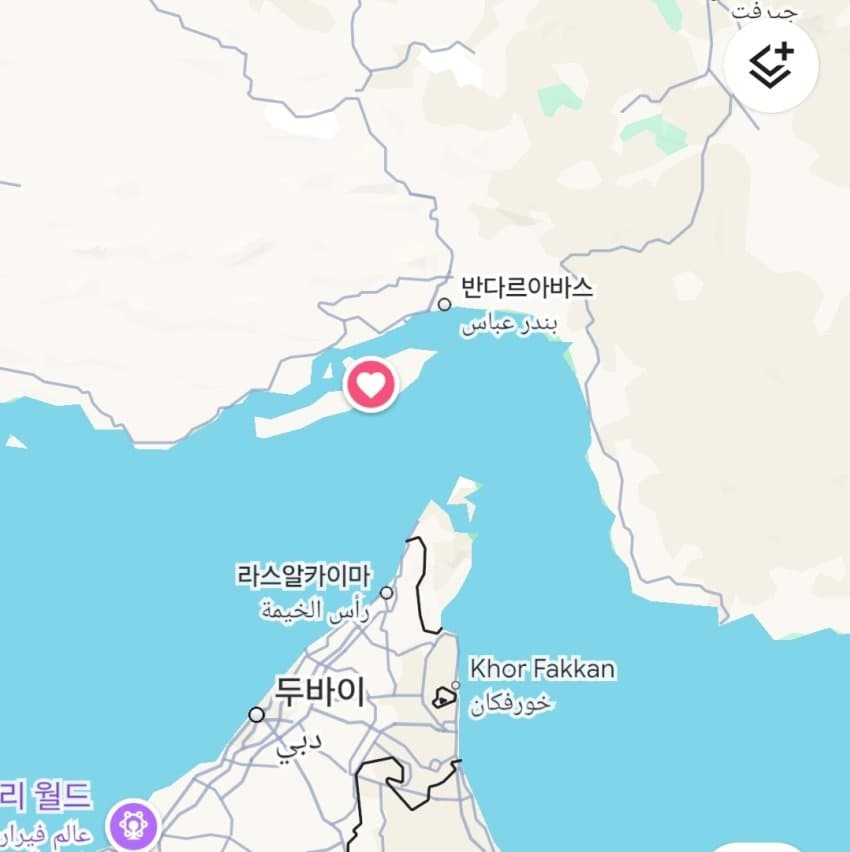
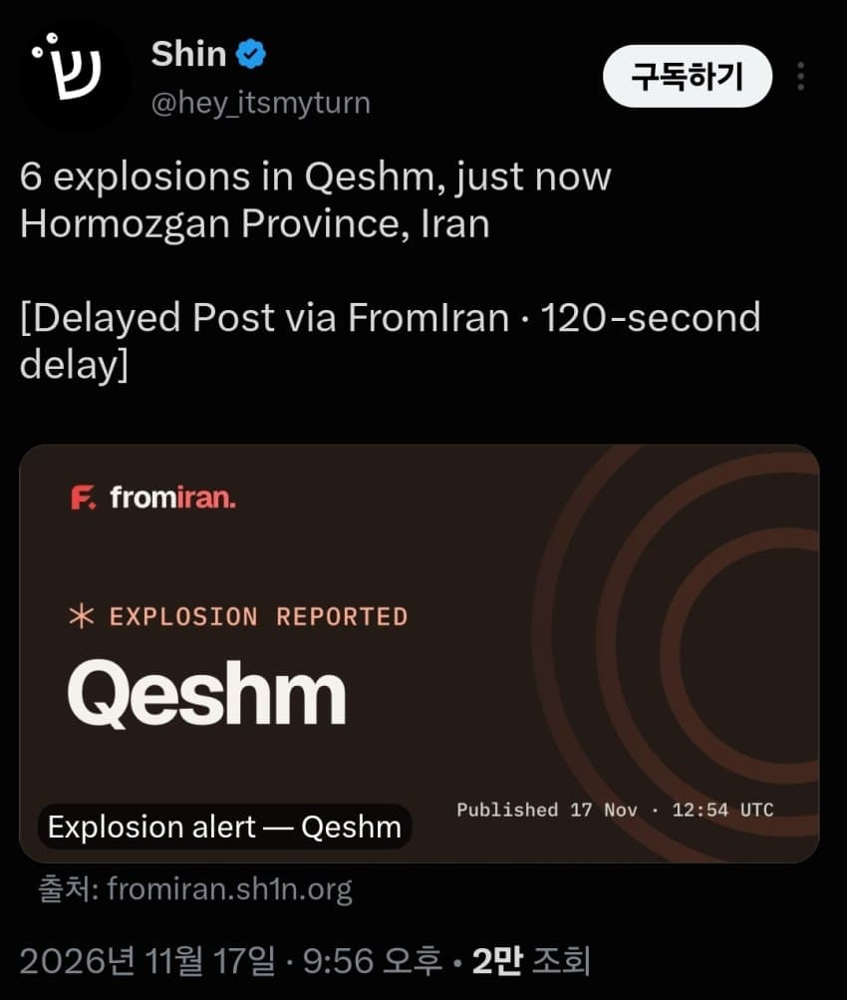
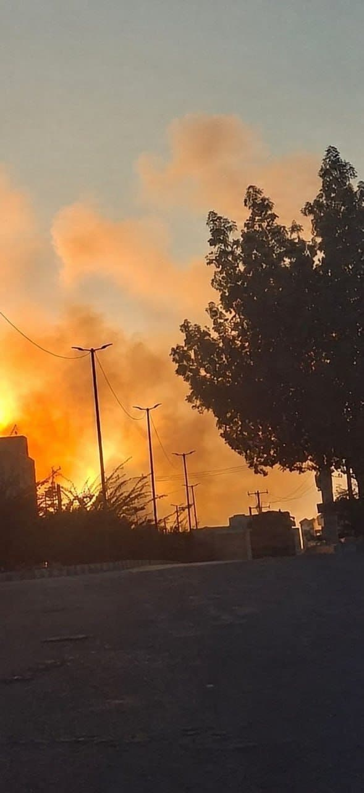
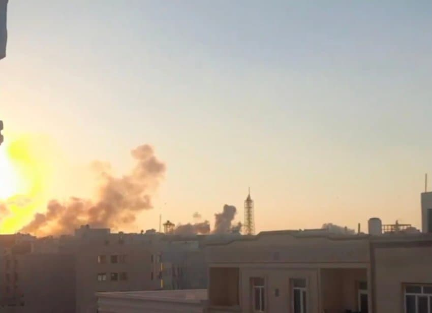
한국시간 기준 어제자 22시경 현지제보로
이란의 호르무즈 통제의 중요 요충지인 케슘섬에서 여러 폭발음 및 폭격 보고
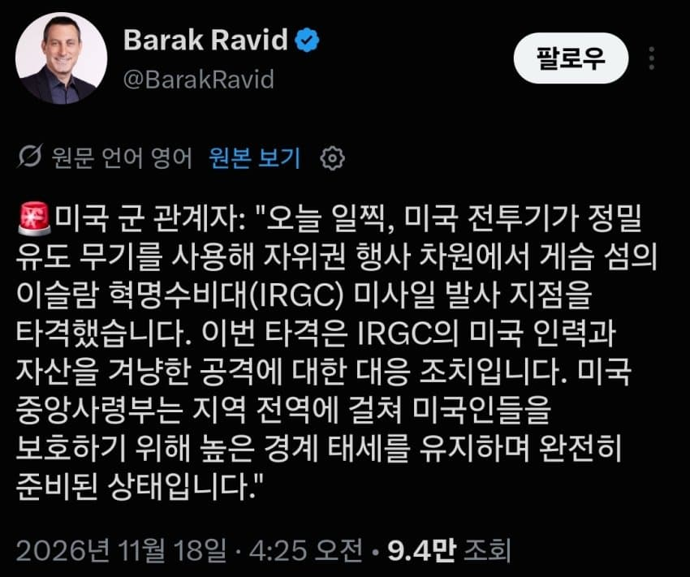
악시오스(Axios)의 기자인 버락라비드에 의해
이는 미군의 공습이였음이 밝혀졌었음
명분은 어제자 이란의 바레인 미군기지 공습에 대한 보복
타겟은 IRGC의 미사일 발사대
2. 이란의 보복, 쿠웨이트에 드론공습
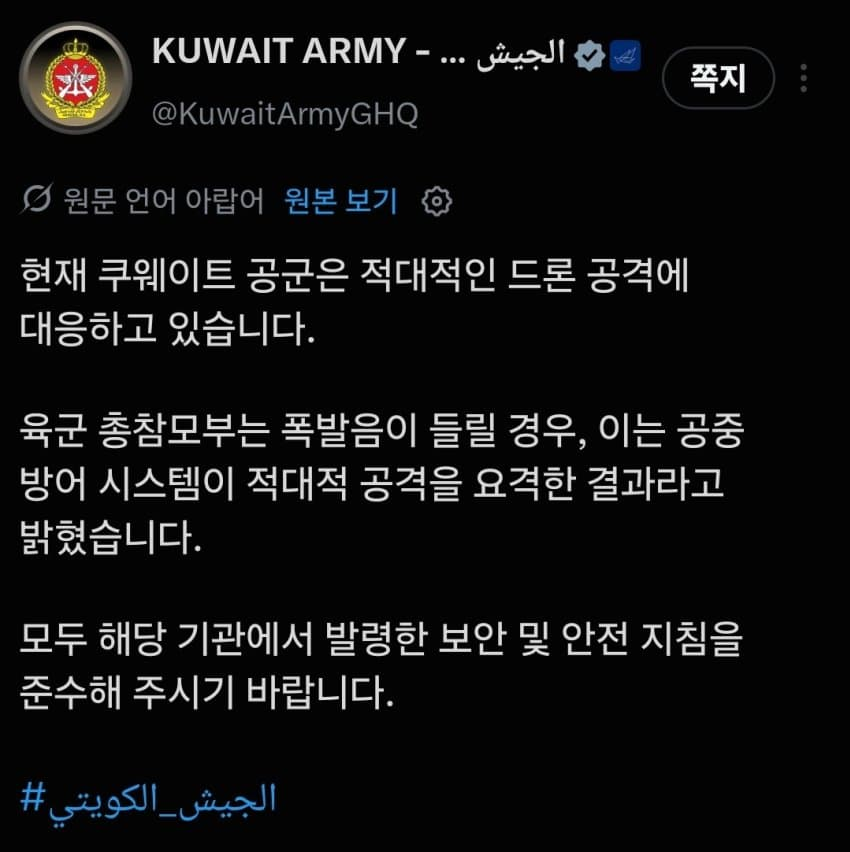
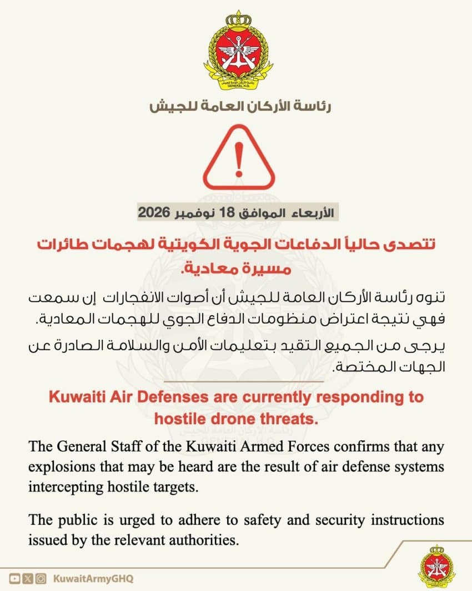
그러다 한국시간기준 06:39,
쿠웨이트에 드론 공습경보가 발령됨
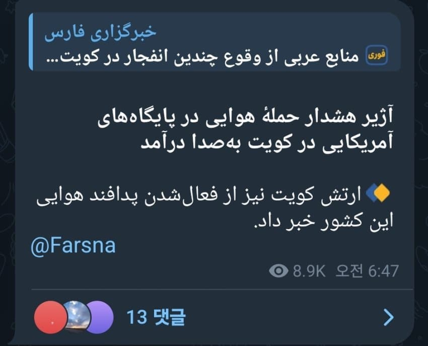
쿠웨이트 내 미군 기지에서 공습 경보가 울렸다.
쿠웨이트군 또한 자국의 방공 체계를 가동했다고 발표했다.
*파르스통신(IRGC 연계) 공식 텔레그램 뉴스채널
이란의 IRGC 연계 언론들에 따르면
쿠웨이트 미군기지서 사이렌이 울렸고,
총 두차례에 걸쳐 폭발음이 들렸다고 보고
아직까진 IRGC나 이란군의 공식 작전발표는 없는상태
3.이란의 보복2, 바레인 공습
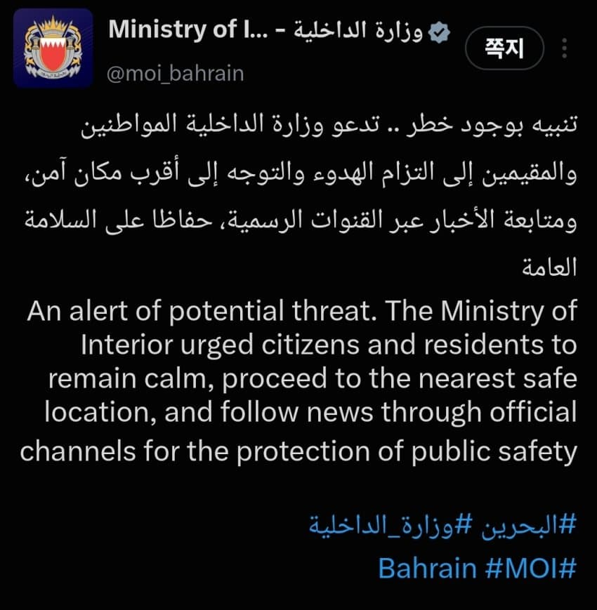
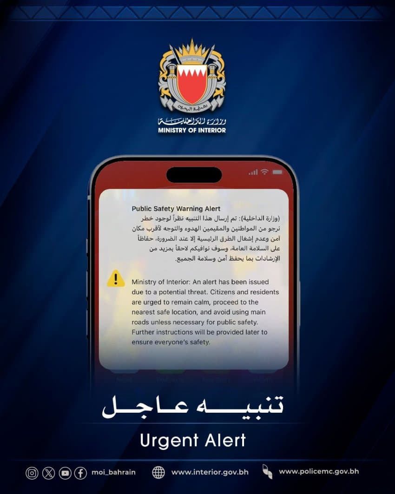
한시간쯤 뒤인 한국시간기준 오전 8시 6분,
바레인에서도 공습경보를 발령함
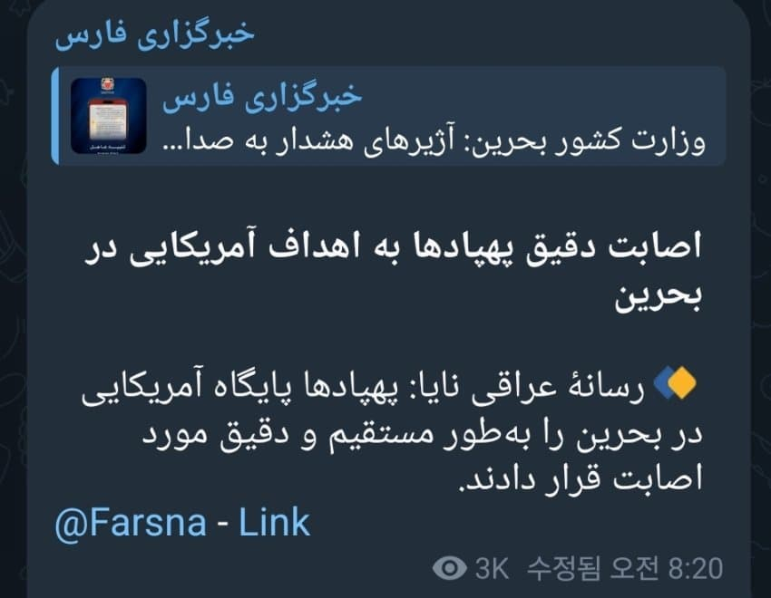
이라크 매체 '나야(Naya)': 드론이 바레인에 위치한 미군 기지를 직접, 그리고 정밀하게 타격했다.
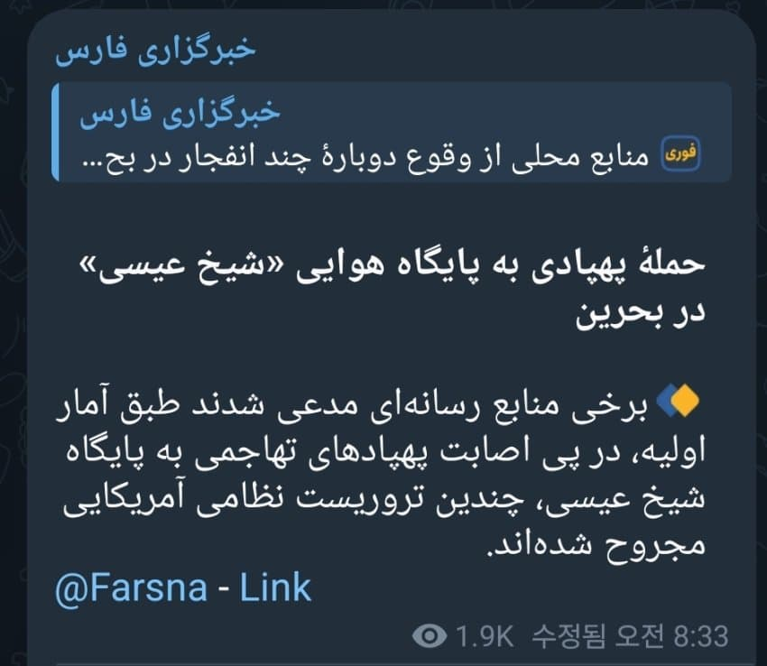
바레인 "셰이크 이사" 공군 기지에 대한 드론 공격
일부 언론 보도에 따르면, 공격용 드론이 셰이크 이사 공군 기지에 충돌한 결과, 초기 보고에 따르면 여러 명의 미국 군인이 부상을 입었습니다.
*파르스통신(IRGC 연계) 공식 텔레그램 뉴스채널
아랍권 언론들의 보도와 현지 제보 영상들에 따르면
이번 바레인 공습은 방공망을 뚫고 미군기지 직격에 성공한걸로 보임
약 2.5개월만에 이란이 중동국가의 미군기지 공습을 재개했던 11/13 바레인 공습을 시작으로
이란이 미군의 깔짝 공습들에 대해
다시 적극적인 보복을 시작한 듯
중동전쟁의 긴장이 다시금 고조되는 중
댓글
수집 당시 댓글 57개
어부바 · 11.18 20:20:47
· ㅇㅇ · 11.18 20:22:18
ㅇㅇ · 11.18 20:21:07
· ㅂㅂ · 11.19 11:22:33
봇치쟝 · 11.18 20:21:09
· Zui · 11.18 20:39:20
· Zui · 11.18 20:39:50
· 봇치쟝 · 11.18 20:39:59
· 봇치쟝 · 11.18 20:44:15
ㅇㅇ · 11.18 20:21:59
ㅇㅇ · 11.18 20:23:26
· ㅇㅇ · 11.18 20:31:42
아님말고 · 11.18 20:23:27
· ㅇㅇ · 11.18 20:25:10
· ㅇㅇ · 11.18 20:26:05
· 아님말고 · 11.18 20:26:28
· ㅇㅇ · 11.18 20:29:46
· ㅇㅇ · 11.19 07:59:55
ㅇㅇ · 11.18 20:25:01
· ㅇㅇ · 11.18 20:30:11
ㅇㅇ · 11.18 20:31:49
ㅇㅇ · 11.18 20:33:41
· ㅇㅇ · 11.18 20:41:36
· ㅇㅇ · 11.18 20:48:09
· Zui · 11.18 20:49:43
ㅇㅇ · 11.18 20:34:04
ㅇㅇ · 11.18 20:42:14
· Zui · 11.18 20:48:55
llllllIllllll · 11.18 20:56:44
ㅇㅇ · 11.18 20:56:56
ㅇㅇ · 11.18 20:57:54
· ㅇㅇ · 11.18 21:38:20
ㅇㅇ · 11.18 21:32:43
· 파치카 · 11.18 21:54:24
ㅋㅋㅋ · 11.18 22:06:05
· ㅇㅇ · 11.18 22:09:41
· ㅋㅋㅋ · 11.18 22:10:37
· ㅇㅇ · 11.18 22:15:36
· ㅋㅋㅋ · 11.18 22:16:36
· ㅇㅇ · 11.18 22:22:20
· ㅇㅇ · 11.18 23:19:44
주소킹 · 11.18 22:09:44
ㅇㅇ · 11.18 23:35:22
환란 전 교회 휴거 · 11.18 23:49:47
주소킹 · 11.19 01:23:02
ㅇㅇ · 11.19 01:56:27
ㅇㅇ · 11.19 01:56:31
ㅇㅇ · 11.19 05:25:08
ㅇㅇ · 11.19 05:43:01
원택이 · 11.19 06:42:31
· ㅇㅇ · 11.19 10:48:58
고약상자 · 11.19 06:52:08
ㅇㅇ · 11.19 07:12:59
ㅇㅇ · 11.19 07:27:34
ㅇㅇ · 11.19 07:57:48
ㅇㅇ · 11.19 08:40:01
ㅇㅇ · 11.19 10:11:04